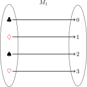
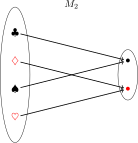

Blant de mest effektive og anvendelige datastrukturene er basert på en teknikk
som heter hashing. Dersom du bruker HashMap eller HashSet i Java, eller
bruker dict eller set i Python så bruker du datastrukturer som er basert på
hashing. I likhet med binære søketrær støtter disse datastrukturene innsetting,
oppslag og sletting av nøkler, som assosieres til verdier. Vi skal lære hvordan
slike datastrukturer som kan implementeres enda mer effektivt.
Hashing kan brytes opp i tre problemer:
- Gjøre en vilkårlig verdi om til et tall som brukes som en indeks.
- Hvordan håndtere to verdier som får samme indeks.
- Opprettholde en ideell størrelse på arrayet.
Vi skal se at vi oppnår det som kalles amortisert (eng: amortized) konstant tid på samtlige operasjoner.
Map
Et map, eller en mapping, er en abstrakt datatype. Helt generelt assosierer en nøkkel \(k\) med nøyaktig én verdi \(v\).
|  |  |
Den abstrakte datatypen for map krever at vi kan sette inn, slå opp og slette elementer. Dette kan oppnås med lineær tid på alle operasjoner dersom vi implementerer et map ved hjelp av ordinære lenkede lister, der hvert element i listen er et par \((k, v)\). Vi har sett at binære søketrær kan gi oss logaritmisk tid på samtlige operasjoner, dersom vi antar at nøklene er totalt ordnet. Ved hjelp av hashing kan vi gjøre disse operasjonene enda raskere.
Det er verdt å merke seg at vi kan implementere mengder som maps, der hver
nøkkel mapper til en vilkårlig verdi (for eksempel null).
Hashmaps
Et hashmap er en måte å materialisere den abstrakte datatypen map. Vi bruker kun et enkelt array \(A\), sammen med en hashfunksjon \(h\). Hashfunksjonen konverterer en nøkkel \(k\) til et tall \(i\) der \(0 \leq i < |A|\). Vi kaller en slik konvertering «å hashe».
Som regel finnes det utrolig mange mulige nøkler. Det finnes for eksempel uendelig mange forskjellige strenger. Det er umulig å koke uendelig mange ting ned til \(|A|\) tall, uansett hva størrelsen på \(A\) er. Derfor er vi bundet til å få kollisjoner, altså at to ulike nøkler blir konvertert til det samme tallet \(i\). Vi skal se på to måter å håndtere kollisjoner på.
Hashfunksjoner
En funksjon returner samme output for et gitt input hver gang.1 En hashfunksjon \(h\) får en nøkkel \(k\) og et positivt heltall \(N\) som input, og returnerer et positivt heltall slik at \(0 \leq h(k, N) < N\). Kravene til denne funksjonen er:
- Den må være konsistent (altså være en funksjon). Det vil si at samme input gir alltid samme output.
- Den må gi få kollisjoner (altså være godt distribuert). Det vil si at ulike input bør hashe til ulike output så ofte som mulig.
Det vi ønsker er en funksjon som oppfører seg tilsynelatende tilfeldig
(altså som et kall på random), men som garanterer samme svar hver gang.
Ulike datastrukturer kan trenge egne hashfunksjoner. For heltall er det
ganske enkelt; et tall hasher til seg selv. For strenger må vi tenke litt
hardere.
Hashfunksjon for strenger
Kodeblokkene er skjult, men vises når du trykker på dem; det er ment som en oppfordring til å prøve å løse problemet selv først!
Trykk her dersom du vil vise alle kodeblokkene.
Vi skal se på to mulige hashfunksjoner for strenger, for å illustrere
viktigheten av å velge en fornuftig hashfunksjon. Den første utfordringen er
å koke strengen ned til et tall mellom \(0\) og \(N\). Den underliggende
representasjonen av en streng er et array av positive heltall, der hvert
heltall representerer en bokstav. I Python kan vi hente ut de underliggende
tallene ved å kalle på ord. Her er et eksempel:
[ord(c) for c in 'algorithm']
| 97 | 108 | 103 | 111 | 114 | 105 | 116 | 104 | 109 |
Altså er a assosiert med tallet \(97\), l er assosiert med tallet \(108\) og
så videre. Det viktige her er ikke hvilke bokstaver som er assosiert med
hvilke tall, men at for alle bokstaver så det finnes det et tall bokstaven
er assosiert med.
En rimelig (men kanskje litt naiv) hashfunksjon for strenger er å ta summen av tallene bokstavene er assosiert med. For at tallet skal holde seg mellom \(0\) og \(N\) gir vi summen modulo \(N\).
def hash_string_bad(s, N): return sum(ord(c) for c in s) % N
Dette er en gyldig hashfunksjon, men allikevel er den ikke veldig bra i praksis. Dette kommer delevis av at menneskeskapt data har en tendens til å inneholde symmetrier som gjenspeiles i summen av bokstavene. En annen grunn til at den ikke egner seg er at summen ikke vokser raskt nok; bare svært lange strenger kan hashe til store tall.
Her er en bedre hashfunksjon for strenger, som er den som brukes i Java.
def hash_string_good(s, N): h = 0 for c in s: h = 31 * h + ord(c) return h % N
Den eneste forskjellen er at vi ganger den foreløpige hashen med \(31\) i hver iterasjon. Dette gjør at permutasjoner ikke lenger hasher til det samme elementet, og at tallet vokser veldig fort. Det er ikke noe veldig spesielt med tallet \(31\), men det er stort nok til at selv ganske korte strenger kan få rimelig store tall, det er et primtall, og det får plass i en byte.
Sammenligning av hashfunksjoner
Merk at denne seksjonen viser hvordan vi kan illustrere hvor godt en hashfunksjon distribuerer. Måten vi lager illustrasjonene og bibliotekene som brukes er ikke relevant for pensum i IN2010, men tas med for å gi et komplett bilde av hva de resulterende illustrasjonene viser.
La oss forsøke å illustrere forskjellen mellom disse to hashfunksjonene ved
å undersøke hvor mange kollisjoner som forekommer ved bruk av henholdsvis
hash_string_bad og hash_string_good på et stort datasett. Vi kan ta
utgangspunkt i en ordliste som brukes av mange stavekontrollprogrammer og
ligger lett tilgjengelig i /usr/share/dict/words på de fleste
unix-systemer.
with open('/usr/share/dict/words', 'r') as f: words = [line.strip() for line in f]
Vi kan raskt sjekke hvor mange ord som ligger i ordlisten:
len(words)
235976
Nå kan vi skrive en prosedyre som anvender en gitt hashfunksjon \(h\) med
tilhørende \(N\) på alle strengene i en liste av strenger. Den returnerer en
mapping fra posisjoner \(0 \leq i < N\) til antall strenger \(s\) i listen som
hasher til \(i\). Vi kaller dette distribusjonen for hashfunksjonen \(h\). For
å gjøre dette kan vi benytte oss av Python's Counter datastruktur.
from collections import Counter def hash_distribution(hashfn, N, strings): return Counter([hashfn(s, N) for s in strings])
Vi kan vi lage en bitteliten tabell som viser hvordan hashfunksjonene distribuerer for \(N = 7\).
dist_bad = hash_distribution(hash_string_bad, 7, words) dist_good = hash_distribution(hash_string_good, 7, words) header = ['i', 'bad', 'good'] rows = [[i, dist_bad[i], dist_good[i]] for i in range(7)] [header] + rows
| i | bad | good |
| 0 | 33949 | 33904 |
| 1 | 33580 | 33919 |
| 2 | 33785 | 33359 |
| 3 | 33818 | 33985 |
| 4 | 33577 | 33556 |
| 5 | 33506 | 33678 |
| 6 | 33761 | 33575 |
Hvis vi ser på antall strenger (\(235976\)) og deler det på \(N\) får vi \(\frac{235976}{7} = 33710\); det forteller oss at med en perfekt distribusjon ville alle posisjoner blitt hashet til \(33710\) ganger. Vi kan se at begge hashfunksjonene gir en ganske god distribusjon. For å få en bedre innsikt trenger vi å se på langt større \(N\), og da kan det være hensiktsmessig å lage en illustrasjon. Her bruker vi et enkelt bibliotek svgwrite for å lage SVG-filer.
Lag illustrasjoner
La oss anta at \(N\) er et kvadrattall der \(s^2 = N\). Da kan vi lage et \(s \times s\) bilde, der hvert punkt svarer til en posisjon \(i\). Gitt to positive heltall \(0 \leq x < s\) og \(0 \leq y < s\), så svarer \(x + y \cdot s\) til en unik posisjon \(i\) (dette er en vanlig måte å konvertere mellom 1- og 2-dimensjonale arrayer). Vi lar hvert punkt fargelegges med styrke som er proporsjonal med hvor mange strenger som hasher til \(k\). Hvert punkt tegnes som en sirkel med radius \(r = \frac{1}{2}\).
import svgwrite from svgwrite.shapes import Circle def draw_distribution(dist, N): s = int(N**0.5) r = 0.5 svg = svgwrite.Drawing(size=(s, s)) svg.viewbox(0, 0, s, s) m = dist.most_common(1)[0][1] for y in range(s): for x in range(s): k = x + y * s opacity = dist[k]/m svg.add(Circle((x + r, y + r), r, fill = 'purple', fill_opacity = opacity)) return svg
Nå kan vi tegne distribusjoner for den dårlige og den gode hashfunksjonen, og se hvordan de sammenlignes for ulike verdier av \(N\). Vi skriver en liten hjelpefunksjon for dette.
def drawhashfunctions(Ns, hashfunctions, strings): for N in Ns: for hashfn in hashfunctions: name = hashfn.__name__ + '_' + str(N) + '.svg' dist = hash_distribution(hashfn, N, strings) svg = draw_distribution(dist, N) svg.saveas(name)
Vi kan kalle på denne for rimelige verdier av \(N\) og hashfunksjonene vi ønsker å vise.
drawhashfunctions([100, 400, 1024, 2500, 4096],
[hash_string_bad, hash_string_good],
words)
Resultater
For \(N = 100\) kan vi allerede se at det er større variasjon i distribusjonen
for hash_string_bad enn hash_string_good.
For \(N = 400\) blir forskjellen noe mer markant.
For \(N = 1024\) ser vi helt tydelig at det hashes til noen nøkler mye oftere
enn andre for hash_string_bad, men det er ingen slike mønstre for
hash_string_good.
For \(N = 2500\) kan vi identifisere nytt problem med hash_string_bad. Ingen
ord hasher til et tall som blir større enn \(N\) (før vi anvender modulo), og
dermed er det mange nøkler som aldri hashes til. Det vil resultere i ubrukte
plasser i et array som brukes for a representere et hashmap.
Til slutt kan vi se for \(N = 4096\) at problemet vedvarer for den dårlige hashfunksjonen, men den gode fortsetter å gi en jevn distribusjon.
Kollisjonshåndtering
Den overordnede idéen for å implementere en hashmap er å la hashmapet være representert som et array \(A\) av størrelse \(N\), og bruke en hashfunksjon \(h(k, N)\) til å angi indeksen for en gitt nøkkel \(k\). Selv hvis vi lar \(N\) være mye større enn antall elementer \(n\) som er lagret i hashmapet, så vil det kunne oppstå kollisjoner (altså to nøkler som sogner til samme indeks). Vi skal se to måter å håndtere slike konflikter på. Den ene går ut på å la hver posisjon i arrayet peke til en liste av nøkkel- og verdipar \((k, v)\). Denne teknikken kalles «separate chaining». Den andre teknikken går ut på å først forsøke å plassere \((k, v)\) på indeksen som er gitt av hashfunksjonen; dersom det ikke er ledig på den plassen, så prøver vi neste plass, og neste helt frem til vi finner en ledig plass. Denne teknikken kalles «linear probing».
Felles for begge teknikkene er at effektiviteten blir svært dårlig dersom det oppstår mange kollisjoner. I det ekstreme (og helt usannsynlige) tilfellet der alle nøkler hasher til samme posisjon, så får vi lineær tid på alle operasjoner. Dette håndteres ved å sørge for at det til enhver tid er godt med plass i arrayet. Hvis \(n\) er antall elementer som lagres, og \(N\) er størrelsen på arrayet, så gir \(\frac{n}{N}\) det vi kaller en load factor. En vanlig strategi for å sørge for at det alltid er godt med plass er å doble størrelsen på arrayet når \(\frac{n}{N}\) overstiger \(0.75\).
Vi kan lage en klasse MyMap som inneholder oppførselen som er felles for
begge varianter. Den eksponerer en metode ensurecapacity, som dobler
størrelsen på arrayet dersom det er for fullt. En slik størrelsesendring
kalles en rehash, fordi alle nøkler må hashes på nytt med hensyn til en
større \(N\), og plasseres tilbake i arrayet.
class MyMap: LOAD_FACTOR_THRESHOLD = 0.75 def __init__(self): self.n = 0 self.N = 1 self.A = [None] * self.N def __loadfactor(self): return self.n / self.N def __rehash(self): kvs = [(k, v) for k, v in self] self.n = 0 self.N *= 2 self.A = [None] * self.N for k, v in kvs: self[k] = v def ensurecapacity(self): if self.__loadfactor() >= self.LOAD_FACTOR_THRESHOLD: self.__rehash() def __repr__(self): kv_strs = [f'{k} ↦ {v}' for k, v in self] return '{' + ', '.join(kv_strs) + '}'
Merk at vi her antar at vi også implementerer en iterator for klassene som
arver fra MyMap (i Java ville MyMap vært implementert som en abstrakt
klasse, som hadde vært noe bedre objektorientert stil). Vi implementerer også
__repr__, som får Python til å printe vår implementasjon av hashmap på et
mer lesbart format.
I implementasjonene under vil vi bruke Python sin innebygde hashfunksjon
hash, som fungerer på (nesten2) alle typer i Python, til fordel for de
som ble implementert i forrige seksjon. Denne returnerer et tall uten hensyn
til \(N\), så vi må selv ta modulo \(N\) av resultatet.
Separate Chaining
Husk at idéen er å la hver posisjon i arrayet peke til en liste, og plassere
nøkkel-/verdiparene i den listen. Lister i denne konteksten kalles ofte
bøtter. I stedet for å opprette mange tomme lister, lar vi heller hver
posisjon i arrayet peke på None, og opprette en liste ved behov. Dersom
det allerede finnes en verdi med samme nøkkel, så skal vi erstatte verdien.
La oss lage et skall for et hashmap basert på separate chaining.
class SeparateChainingMap(MyMap): <<separate_chaining_insert>> <<separate_chaining_get>> <<separate_chaining_delete>> <<separate_chaining_iter>>
Syntaksen eksemplifisert ved <<separate_chaining_insert>> brukes som
plassholder for kodeblokker vi skal skrive. Metodene kommer i de neste
delseksjonene, og siste delseksjon for separate chaining inneholder den
fulle implementasjonen.
Innsetting
For innsetting av et nøkkel-/verdipar \((k, v)\) er strategien som følger:
- Passe på at det er nok plass (kalle på
ensurecapacity). - Finne indeksen \(i\) hvor nøkkel-/verdiparet skal plasseres.
- Sørge for at det er en bøtte vi kan putte nøkkel-/verdiparet i.
- Erstatte verdien hvis det er aktuelt.
- Legg til nøkkel-/verdiparet hvis nøkkelen ikke var i hashmapet fra før.
Ved å kalle metoden __setitem__, så kan vi bruke Python sin d[k] = v
syntaks, der d er en ordbok (eller i vårt tilfelle, en
SeparateChainingMap).
def __setitem__(self, k, v): self.ensurecapacity() i = hash(k) % self.N if self.A[i] == None: self.A[i] = [] bucket = self.A[i] for j in range(len(bucket)): kj, vj = bucket[j] if kj == k: bucket[j] = (k, v) return self.n += 1 bucket.append((k, v))
Oppslag
Å finne verdien for en gitt nøkkel \(k\) i hashmapet følger i stor grad samme fremgangsmåte som innsetting, men er litt enklere. Vi finner bøtta \(k\) skal være i, og leter gjennom den. Dersom vi finner nøkkelen \(k\) skal den korresponderende verdien returneres.
Ved å kalle metoden __getitem__, så kan vi bruke Python sin d[k]
syntaks.
def __getitem__(self, k): i = hash(k) % self.N bucket = self.A[i] if bucket == None: return for ki, v in bucket: if ki == k: return v
Sletting
Igjen er det mye likt for sletting. Vi finner riktig bøtte for en gitt nøkkel \(k\), og sletter \((k, v)\) fra listen. Her gjøres dette ved hjelp av en list comprehension.
Ved å kalle metoden __delitem__, så kan vi bruke Python sin del d[k]
syntaks.
def __delitem__(self, k): i = hash(k) % self.N bucket = self.A[i] if bucket == None: return self.A[i] = [(ki, v) for ki, v in bucket if ki != k]
Iterator
Iteratoren for hashmapet kan skrives ved å gå gjennom arrayet, og gå
gjennom hver (ikke-tomme) bøtte, og gi hvert nøkkel-/verdipar. For å få en
iterator bruker vi yield.
def __iter__(self): for bucket in self.A: if bucket: for kv in bucket: yield kv
Minitest
La oss sjekke om dette hashmapet faktisk kan holde på elementer slik vi
forventer. Vi nøyer oss med å mappe bokstavene a, b, c og d, til
henholdsvis 1, 2, 3 og 4, og printer ut hashmapet mellom hver
operasjon.
d = SeparateChainingMap() d['a'] = 0 print(d) d['b'] = 1 print(d) d['c'] = 2 print(d) d['d'] = 3 print(d) del d['a'] print(d) del d['b'] print(d) del d['c'] print(d) del d['d'] print(d)
{a ↦ 0}
{b ↦ 1, a ↦ 0}
{b ↦ 1, c ↦ 2, a ↦ 0}
{b ↦ 1, c ↦ 2, a ↦ 0, d ↦ 3}
{b ↦ 1, c ↦ 2, d ↦ 3}
{c ↦ 2, d ↦ 3}
{d ↦ 3}
{}
Det ser rimelig ut! Det er verdt å merke seg at elementene ikke kommer ut sortert etter nøkkel. Det er forventet, siden hashmaps ikke er ordnede.
<<separate_chaining_map>>
Klikk på kodeblokken ovenfor for å se hele implementasjonen av hashmap med separate chaining.
Linear Probing
Idéen bak linear probing er å se på \(i = h(k, N)\) som den ideelle posisjonen for en nøkkel \(k\), og hvis denne posisjonen er opptatt, så prøver vi neste posisjon \(i + 1 \mod N\), og så neste helt frem vi når en ledig posisjon. Merk at den siste posisjonen \(N - 1\) i arrayet sin neste er \(0\); vi modulo \(N\) for å alltid sørge for at vi holder oss innenfor grensene av arrayet. Når vi skal hente ut en verdi med nøkkel \(k\) vil vi igjen starte å lete på posisjonen \(i = h(k, N)\). Dersom vi finner et nøkkel-/verdipar med \(k\) som nøkkel kan vi returnere verdien \(v\). Dersom plassen er ledig kan vi konkludere med at nøkkelen ikke er i hashmapet. Dersom vi finner en nøkkel som er ulik \(k\), så kan vi lete videre på neste plass, og fortsette slik frem til vi finner \(k\) (og i så fall returnerer verdien) eller vi finner en ledig plass, og i så fall konkludere med at nøkkelen ikke er i hashmapet.
Både insetting og oppslag er egentlig ganske rett frem med linear probing. Strategien med å starte på plass \(i = h(k, N)\) og lete etter neste frem til vi finner \(k\) eller en ledig plass er i grunn litt naiv. Det fungerer fordi at den eneste grunnen til at \(k\) ligger på en plass etter \(i\) er at det allerede lå en verdi på plass \(i\) da \(k\) ble lagt til; hvis de elementene som lå mellom \(i\) og der \(k\) ble lagt til fremdeles ligger der når vi skal søke etter \(k\), så fungerer alt som det skal. Et problem oppstår dersom vi skulle fjerne verdien som ligger på plass \(i\); da vil et oppslag på \(k\) avslutte, fordi plass \(i\) er ledig. Det betyr at ved sletting, så er vi nødt til å tette eventuelle «hull» som oppstår ved å fjerne et element. Vi ønsker å tette hullet med det første nøkkel-/verdiparene etter \(i\) som ville blitt plassert på plass \(i\) dersom det ble plassert i hashmapet nå som plass \(i\) er ledig. Det er nøyaktig de nøklene som \(k\) som hasher til en posisjon \(i\) eller «tidligere». Vi vil konkretisere hva «tidligere» betyr når vi jobber med modulo \(N\) i delseksjonen om sletting nedenfor.
Denne interaktive visualiseringen kan hjelpe for å bygge intuisjon for algoritmene for linear probing. Kort bruker-guide:
- Implementasjonen viser et hashset (altså lagrer vi kun nøkler, og ikke verdier).
- Nøklene er heltall.
- Hashfunksjonen som brukes er \(h(k, N) = k \mod N\).
- Feltet
randomkan overskrives med et heltall. - Hver knapp operasjon har en én-bokstavs keybinding, indikert med en understrek under bokstaven det gjelder.
La oss igjen lage et skall for et hashmap basert på linear probing. Den også
arver fra MyMap.
class LinearProbingMap(MyMap): <<linear_probing_insert>> <<linear_probing_get>> <<linear_probing_delete>> <<linear_probing_fill_hole>> <<linear_probing_iter>>
Innsetting
For innsetting av et nøkkel-/verdipar \((k, v)\) er strategien som følger:
- Passe på at det er nok plass (kalle på
ensurecapacity). - Finne indeksen \(i\) hvor nøkkel-/verdiparet ideelt skal plasseres.
- Finne den første ledige plassen fra \(i\), og plassere \((k, v)\).
Ledige plasser er indikert ved None.
def __setitem__(self, k, v): self.ensurecapacity() i = hash(k) % self.N while self.A[i] != None: ki, _ = self.A[i] if k == ki: self.A[i] = (k, v) return i = (i + 1) % self.N self.n += 1 self.A[i] = (k, v)
Oppslag
Oppslag følger i stor grad samme fremgangsmåte som innsetting. Vi starter
på indeks \(i = h(k, N)\), sjekker om \(k\) ligger på plass \(i\). Hvis ikke,
øker vi \(i\) (modulo \(N\)) så lenge vi ikke møter på et hull (representert
ved None).
def __getitem__(self, k): i = hash(k) % self.N while self.A[i] != None: ki, vi = self.A[i] if k == ki: return v i = (i + 1) % self.N
Sletting
Igjen er strukturen mye av det samme. Vi må først finne nøkkelen \(k\),
akkurat slik vi gjorde for oppslag. Hvis vi finner \(k\), så setter vi
posisjonen i arrayet til None. Så kaller vi på __fill_hole, som
defineres nedenfor.
def __delitem__(self, k): i = hash(k) % self.N while self.A[i] != None: ki, _ = self.A[i] if k == ki: self.n -= 1 self.A[i] = None self.__fill_hole(i) return i = (i + 1) % self.N
Å «tette hullet» på plass \(i\) gjøres ved lete fra \(i + 1 \mod N\) frem til vi treffer et nytt hull eller finner en nøkkel som kan flyttes til plass \(i\). Dersom vi finner en slik nøkkel, så må vi rekursivt tette hullet som oppstår når vi flytter nøkkelen til plass \(i\).
Det siste som gjenstår er å avgjøre om en nøkkel \(k\) kan flyttes til plass \(i\). Dette er tilfellet dersom \(k\) hasher til plassen \(i\) eller en tidligere posisjon. Anta at \(k\) ble funnet på posisjon \(i + s\), der \(s\) er avstanden til \(i\). Vi kan flytte \(k\) dersom \(k\) ikke hasher til en verdi mellom \(i+1\) og \(s\). Siden vi her regner med modulo er det ikke tilstrekkelig å sjekke om \(h(k, N) \leq i\).
def __fill_hole(self, i): s = 1 while self.A[(i + s) % self.N] != None: k, v = self.A[(i + s) % self.N] j = hash(k) % self.N if not(0 < (j - i) % self.N <= s): self.A[i] = (k, v) self.A[(i + s) % self.N] = None self.__fill_hole((i + s) % self.N) return s += 1
Linjen som inneholder testen not(0 < (j - i) % self.N <= s) er formulert
ganske annerledes i boken. Der står det heller \(j \not\in (i, i + s] \pmod
N\), som betyr at \(j\) ikke er lik hverken \(i + 1 \pmod N, i + 2 \pmod N,
\dots, i + s \pmod N\). Måten vi formulerer dette i koden er basert på
innsikten om at modulo aritmetikk fungerer som en klokke, så vi kan fint
«forskyve» alle tallene rundt sirkelen uten at forholdet mellom tallene
\(i\), \(j\) og \(s\) endrer seg. Hvis vi legger til \(N - i\) overalt har vi:
\[\begin{align*} i + (N - i) &= 0 &&\pmod N\\ i + s + (N - i) &= s + N = s &&\pmod N\\ j + (N - i) &= j - i &&\pmod N \end{align*}\]
Nå kan vi sjekke om \(0 < j - i \pmod N \leq s\), som er helt ekvivalent med å sjekke om \(j\) er mellom \(i + 1\) og \(i + s\), men der vi slipper å ta høyde for om \(j\) er større eller mindre enn \(i\).
Merk at en slik utregning (eller formulering) ikke er det vesentlige her. Det vesentlige er at en nøkkel \(k\) kun kan brukes til å fylle et hull på plass \(i\), dersom dens ideelle posisjon \(j\) ikke er mellom \(i+1\) og \(i + s\).
Iterator
Iteratoren for hashmapet kan skrives ved å gå gjennom arrayet, og gå
gjennom hver (ikke-tomme) bøtte, og gi hvert nøkkel-/verdipar. For å få en
iterator bruker vi yield.
def __iter__(self): for kv in self.A: if kv != None: yield kv
Minitest
La oss sjekke om dette hashmapet faktisk kan holde på elementer slik vi
forventer. Vi nøyer oss med å mappe bokstavene a, b, c og d, til
henholdsvis 1, 2, 3 og 4, og printer ut hashmapet mellom hver
operasjon.
d = LinearProbingMap() d['a'] = 0 print(d) d['b'] = 1 print(d) d['c'] = 2 print(d) d['d'] = 3 print(d) del d['a'] print(d) del d['b'] print(d) del d['c'] print(d) del d['d'] print(d)
{a ↦ 0}
{b ↦ 1, a ↦ 0}
{b ↦ 1, c ↦ 2, a ↦ 0}
{b ↦ 1, c ↦ 2, a ↦ 0, d ↦ 3}
{b ↦ 1, c ↦ 2, d ↦ 3}
{c ↦ 2, d ↦ 3}
{d ↦ 3}
{}
Det ser fint ut!
<<linear_probing_map>>
Klikk på kodeblokken ovenfor for å se hele implementasjonen av hashmap med linear probing.
Testing
Testing er ikke en del av pensum i IN2010, og denne seksjonen er mest for de spesielt interesserte.
For å teste hashmapimpementasjonene, kan vi bruke et bibliotek som heter
Hypothesis. I stedet for å skrive mange tester for hånd, der vi prøver å
finne på mulige grensetilfeller, kan vi bruke Hypothesis til å generere
tester for oss. Dette kalles «property-based testing». Våre
hashmapimpementasjoner kan testes opp mot Python's innebygde dict siden de
skal støtte de samme operasjonene.
For hashmap ligger alle utfordringene i hvordan nøklene behandles. Verdiene som lagres sammen med nøkkelen spiller ingen rolle for algoritmene, og derfor er det logikken rund nøklene som har behov for testing.
Vi setter opp et enkelt testscenario:
- Ta en liste med nøkler som input, der nøklene er heltall.
- Sett inn hver nøkkel i hashmapet med verdi \(1\) (valgt vilkårlig).
- Slett hver hver nøkkel fra hashmapet.
Vi gjør dette for en SeparateChainingMap, en LinearProbingMap og en
dict. Mellom hvert steg sjekker vi at alle hashmapene inneholder de samme
nøklene.
import hypothesis as hyp import hypothesis.strategies as st @hyp.given(st.lists(st.integers())) @hyp.settings(max_examples=1000) def test_hashmaps(keys): ds = SeparateChainingMap() dl = LinearProbingMap() reference = dict() for key in keys: ds[key] = 1 dl[key] = 1 reference[key] = 1 ds_ks = set(k for k, v in ds) dl_ks = set(k for k, v in dl) reference_ks = set(reference.keys()) assert ds_ks == dl_ks == reference_ks for key in keys: del ds[key] del dl[key] if key in reference_ks: del reference[key] ds_ks = set(k for k, v in ds) dl_ks = set(k for k, v in dl) reference_ks = set(reference.keys()) assert ds_ks == dl_ks == reference_ks
Etter vi har definert denne testfunksjonen (med litt Hypothesis-magi), får vi
en randomisert testfunksjon test_hashmaps. Når vi kaller på denne vil den
generere 1000 tester, som er langt flere enn vi ville klart å skrive for hånd.
test_hashmaps()
Hvis funksjonen kjører uten å klage, så betyr det at det ikke ble funnet noe feil. Da kan vi være langt mer sikre på at denne implementasjonen er korrekt!
Det er viktig å legge til at første gang koden ble testet, så ble det funnet et moteksempel. Hypothesis genererte listen
[0, 1, 4]som trigget en feil i__fill_holei linear probing. Feilen lå på siste linje, derible inkrementert i stedet fors. Slike feil er fort gjort, og ikke alltid så lett å finne. En ofte større utfordring er å finne en liten test som trigger feilen. Hypothesis bruker strategier for å finne et så lite eksempel som mulig.
En uformell kjøretidsanalyse
Ved å gjøre en ordinær kjøretidsanalyse vil vi se på hvor mange steg algoritmene vil bruke under verst tenkelige omstendigheter (altså, en verste tilfelle analyse). Hvis vi gjør det for separate chaining og linear probing, så er det ganske enkelt å se at alle operasjoner har \(O(n)\) kjøretid, der \(n\) er antall elementer i datastrukturen. Det er tilstrekkelig å anta at alle \(n\) elementer hasher til samme posisjon; for separate chaining vil det bety at vi essesielt har implementert hashmaps som en lenket liste; for linear probing betyr det at vi essensielt har implementert et hashmap som et uordnet array (som dynamisk øker størrelsen på arrayet ved behov).
Allikevel påstår vi at hashmaps er en svært effektiv implementasjon av mappinger (og mengder). Den eneste måten det kan stemme på er at en verste tilfelle analyse med store \(O\)-notasjon ikke alltid gir et fullstendig bilde. Det har vi også prøvd å formidle: Store \(O\)-notasjon gir ofte en god indikasjon på om en algoritme er effektiv eller ikke, men notasjonen lar oss også abstrahere vekk detaljer som kan være vesentlige.
For å gjøre en formell analyse av datastrukturer som bruker hashing snakker man ofte om forventet amortisert tid. Å utføre formelle analyser som dette er utenfor pensum i IN2010, men vi skal nå en forståelse av hva det betyr på et overordnet nivå.
Det verste tilfellet for alle operasjoner kan lett fremprovoseres ved å velge en forferdelig dårlig hashfunksjon; det kan også fremprovoseres med en god hashfunksjon og helt vanvittig uflaks. Men vi har sett at vi kan lage hashfunksjoner som distribuerer svært godt, så la oss heller anta at vi har en god hashfunksjon og at nøklene vi skal lagre er tilfeldig distribuert.
Da har vi at sjansen for at en nøkkel \(k\) hasher til \(i\) er \(\frac{1}{N}\) (altså er det like stor sjanse for at \(k\) hasher til \(i\) som til alle andre posisjoner). Sjansen for at vi har mange nøkler \(k_1, k_2, \dots, k_n\) som alle hasher til \(i\) blir \(\overbrace{\frac{1}{N} \cdot \frac{1}{N} \cdots \frac{1}{N}}^n = (\frac{1}{N})^n\). Dette tallet blir veldig lite veldig fort, som er en annen måte å si at sjansen for at dette skjer er forsvinnende liten.
Generelt så er sjansen for kollisjoner liten så lenge det er god plass i arrayet; ethvert som arrayet fylles opp, så er sjansen for kollisjon stor, men sjansen for at kollisjonene oppstår på de samme posisjonene er fremdeles liten. Med andre ord kan vi bruke statistiske metoder for å gi svært gode argumenter for at listene i separate chaining vil være svært korte, og for linear probing er avstanden mellom der en nøkkel hashes til og posisjonen den lagres på er svært kort (og reduseres til en konstant hvis setter en begrensning på load factoren). Det siste som gjenstår for å forstå hvorfor hashmaps er raske, er å snakke om rehashing.
Når arrayet blir for fullt gjør vi en rehash, altså konstruerer et nytt array og setter inn alle elementene på nytt. Dette er jo definitivt lineær tid! Det er ingen måte å argumentere for at vi kan slippe unna med noe lavere enn det. Siden vi vil ha kall på insert som bruker lineær tid, vil igjen en verste tilfelle analyse tilsi at innsetting i hashmaps er i \(O(n)\).
En amortisert analyse ber deg heller ta følgende perspektiv: Ja, vi har et lineært antall operasjoner som må gjøres hver gang arrayet blir dobblet så stort. Anta nå at det krever \(c \cdot n\) operasjoner for en rehashing, der \(c\) er en konstant. Men hva hvis vi heller sier at hvert av kallene som ledet opp til fordoblingen deler på resursene som brukes på å gjennomføre en rehash. Det er ca. \(n\) kall på insert som ledet til fordoblingen, så hva hvis hvert av de kallene gjorde \(c\) flere operasjoner enn de opprinnelig gjorde? Jo, da hadde de gjort et konstant antall flere operasjoner, og fra store \(O\) analyse kjenner vi at \(O(1 + c) = O(1)\) når \(c\) er en konstant. Altså vil hvert av kallene på insert fremdeles være i konstant tid!
En viktig konsekvens av dette er at en innsetting i et hashmap vil være ineffektiv en sjelden gang, og det blir sjeldnere og sjeldnere ettersom antall elementer vokser. For noen applikasjoner kan dette være vesentlig; i et spill for eksempel, kan en rehash kan føre til at ting stopper opp i et lite øyeblikk. I slike settinger kan det kanskje være bedre å heller bruke en trestruktur (som AVL eller rød-svarte trær), som kanskje er tregere i sum, men er til gjengjeld jevn.
For å oppsummere kan vi si at alle operasjoner for hashmaps har \(O(n)\) i en verste tilfelle kjøretidsanalyse. Men ved å anta en god hashfunsjon får vi at gjennomsnittlig er hver operasjon i \(O(1)\), med unntak av kall som fører til rehashing. Hvis vi videre tenker at vi kan fordele ressursbruken på alle kallene som leder til en rehashing, så får vi gjennomsnittlig \(O(1)\) amortisert kjøretidskompleksitet på alle operasjoner.
Fotnoter:
Faktisk er en funksjon og en mapping akkurat det samme:
- en funksjon tar et input og returnerer et output;
- en annen måte å si det samme er at vi relaterer et input til et output;
- som igjen er det samme som at vi assosierer et input til et output;
- som igjen er det samme som at vi assosierer en nøkkel til en verdi.
Vi bruker litt ulike begreper avhengig av hva det er vi ønsker å formidle. For funksjoner er det vanlig at vi har en effektiv måte å beregne hva output skal være for et gitt input. For mappinger er det vanligere at vi eksplisitt lister opp hva som skal assosieres til hva, slik vi gjør når vi putter ting inn i et hashmap.
Python støtter ikke hashing av muterbare datastrukturer, som lister og ordbøker. Det er fordi hashen bestemmes av verdiene i datastrukturen, som gjør at de ikke kan ha en stabil hash over tid.